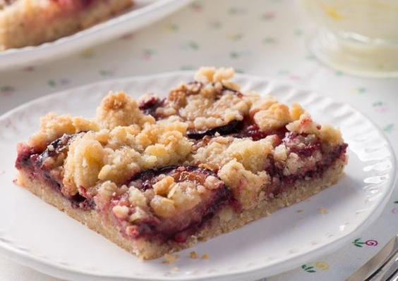

Tarta de ciruelas
Ingredientes para la masa
| Ingrediente | Cantidad |
|---|---|
| Manteca | 100 g |
| Harina | 200 g |
| Yema de huevo | 1 u |
| Esencia de vainilla | a gusto |
| Leche | cant necesaria para unir la masa |
Procedimiento para la masa
- Unir la harina con la manteca.
- Añadir la yema de huevo, la esencia de vainilla y la leche.
- Unir la masa.
- Reservar.
Ingredientes el relleno
| Ingrediente | Cantidad |
|---|---|
| Manteca | 100 g |
| Azucar negra | 2 tazas |
| Huevos | 2 u |
| Ciruelas | 12 u grandes |
| Coñac | A gusto |
| Nueces | 100 g |
Procedimiento el relleno
- Remojar las ciruelas en coñac.
- Unir la manteca con la azucar negra, los huevos, las ciruelas y las nueces.
- Poner sobre la masa y al horno hasta que se cocine la masa.